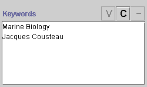

An instance with a String/Single slot shows an entry field:

To set the value of the slot, simply type in the slot. You can enter ASCII characters for a string, including upper and lowercase letters, numbers, and the basic symbols on the keyboard, such as !, _, and %. String values can also include spaces.
You can edit the string directly in the slot. To clear the slot, simply delete the current text.
An instance with a String/Multiple slot shows a display pane with three buttons:

To edit a pre-existing value for a String/Multiple slot:
Select the value you want to edit.
Click the View  button.
An Edit String Value dialog box is displayed.
button.
An Edit String Value dialog box is displayed.
Edit the string directly in the entry field in the dialog box.
Click OK.
To create a value for a String/Multiple slot:
Click the Create  button.
A Create String Value dialog box is displayed.
button.
A Create String Value dialog box is displayed.
Enter a string in the entry field. You can enter ASCII characters, including upper and lowercase letters, numbers, and the basic symbols on the keyboard, such as !, _, and %. String values can also include spaces.
Click OK.
To remove a value from an String/Multiple slot:
Select the value(s) you want to remove. You can select multiple values by holding down the Ctrl key.
Click the Remove  button.
The selected values are removed.
button.
The selected values are removed.
Next: The Symbol Fields